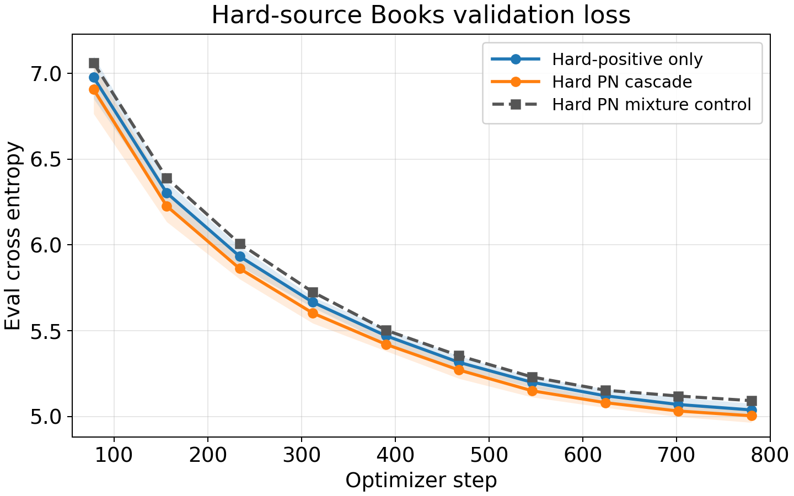

Research note
Model-based data selection for LLM training
Using small auxiliary language models to select training data for downstream performance. Read the working paper.
Context
Although the training data for LLMs is popularly characterized as “the entire internet”, in practice great care and effort is needed to prepare high quality datasets. Our objective is to select a data S of size n targeting downstream metrics.
The CoLoR filter trains a pair of small auxiliary LLMs: Pr(x | marginal) trained on the available training data, followed by Pr(x | conditional) fine-tuned on the downstream task. The auxiliary models are then used to select the n training sequences x with the smallest scores: −log Pr(x | conditional) + log Pr(x | marginal).
Cascading ablated auxiliary models
After training the auxiliary models, the CoLoR filter is bottlenecked by inference, which can be very large (i.e. “the entire internet”). To improve throughput, we propose cascading with ablated auxiliary models.
Available data → cheap ablated score → shortlist → full CoLoR score
Below we show the downstream Books validation loss for three 410M models with C4 data trained around the selection threshold:
- Random baseline (black line): trained on 100K randomly sampled sequences
- CoLoR baseline (blue line; averaged over 3 seeds): 100K sequences selected by the CoLoR filter
- Cascade (orange line; averaged over 3 seeds): 100K sequences selected by the proposed cascade

The 100K sequences selected by the cascade have only a 0.49 Jaccard similarity with the 100K samples selected by the CoLoR filter, yet achieve slightly improved loss. See the paper for more details.
Next steps
Based on our initial findings, we see several axes of improving model-based data filtering:
- Cheap scoring: iterate beyond block-layer ablations, including sequence length sensitivity
- Multi-stage cascades: remove obvious bad examples before expensive full scoring
- Uncertainty-aware selection: incorporate uncertainty to improve selection for downstream metrics
While further iterations are needed to validate real improvement in CE loss, we hypothesize that the point estimate in CoLoR limits selection quality by not using uncertainty in data selection.